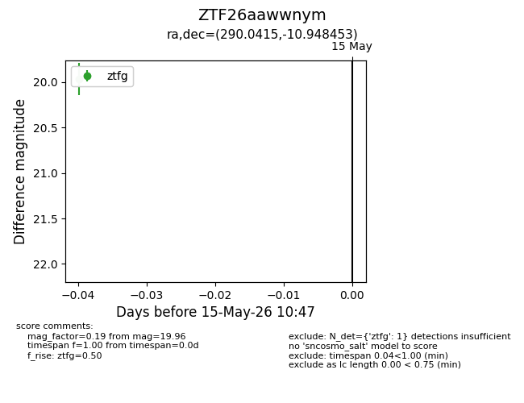
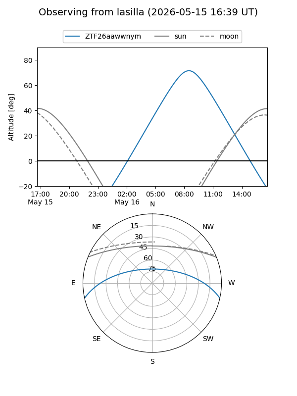
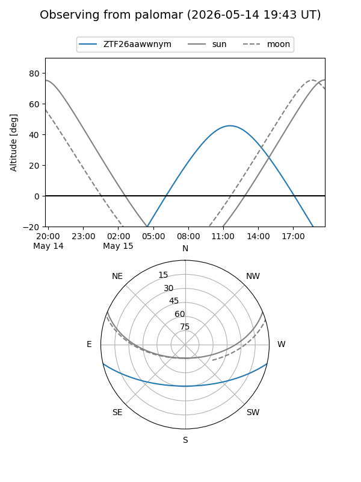

ZTF26aawwnym
Target ZTF26aawwnym at 2026-05-15 10:49
Aliases and brokers:
FINK: link
Lasair: link
ALeRCE: link
alt names
ZTF26aawwnym (ztf,fink_ztf)
Coordinates:
equatorial (ra, dec) = 290.0415,-10.94845
equatorial (HMS+DMS) = 19:20:09.97,-10:56:54.43
galactic (l, b) = (26.3114,-11.29417)
Flags:
Photometry:
last ztfg=19.96
1 ztfg detections
Lightcurve

Visibility


Additional plots